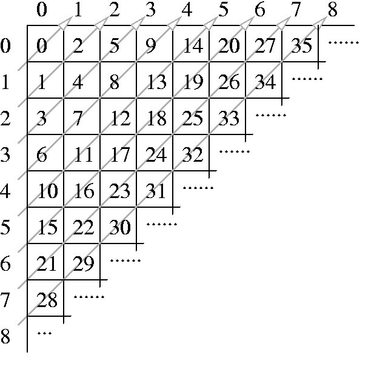

Imagine an infinite table with rows and columns numbered using the
natural numbers. The following figure shows a procedure to traverse
such a table assigning a consecutive natural number to each table
cell:

This enumeration of cells can be used to represent complex data types
using natural numbers:
- A pair of natural numbers (i, j) is represented by the number corresponding
to the cell in row i and column j. For instance, the pair (3,2)
is represented by the natural number 17; this fact is noted by
P2(3, 2) = 17.
- The pair representation can be used to represent n-tuples.
A triplet (a, b, c) is represented by
P2(a, P2(b, c)). A 4-tuple
(a, b, c, d ) is represented by
P2(a, P2(b, P2(c, d ))). This
procedure can be generalized for an arbitrary n:
Pn(a1,..., an) = P2(a1, Pn-1(a2,.., an)),
where Pn denotes the n-tuple representation function,
n 2. For example
P3(2, 0, 1) = 12.
2. For example
P3(2, 0, 1) = 12.
- A list of arbitrary length
 a1,..., an
a1,..., an is represented by
is represented by
L(
 a1
a1,...,
an
) =
P2(
n,
Pn(
a1,...,
an)).
For example,
L( 0, 1
0, 1 ) = 12.
) = 12.
The Association of Convex Makers (ACM) uses this clever enumeration
scheme in a polygon representation system. The system can represent
a polygon, defined by integer coordinates, using a natural number
as follows: given a polygon defined by a vertex sequence
(x1, y1),...,(xn, yn) assign the natural number:
assign the natural number:
L(P2(x1, y1),..., P2(xn, yn)).
ACM needs a program that, given a natural numbers that represents
a polygon, calculates the area of the polygon. It is guaranteed that
the given polygon is a simple one, i.e. its sides do not intersect.
As an example of the problem, the triangle with vertices at (1,1),
(2,0) and (0,0) is codified with the number 2141.
The area of this triangle is 1.
The input consists of several test cases. Each test case is given
in a single line of the input by a natural number representing a polygon.
The end of the test cases is indicated with *.
One line per test case, preserving the input order. Each output line
contains a decimal number telling the area of the corresponding encoded
polygon. Areas must be printed with 1 decimal place, truncating less
significative decimal places.
2141
206
157895330
*
1.0
0.5
1.0
XX Colombian National Programming Contest